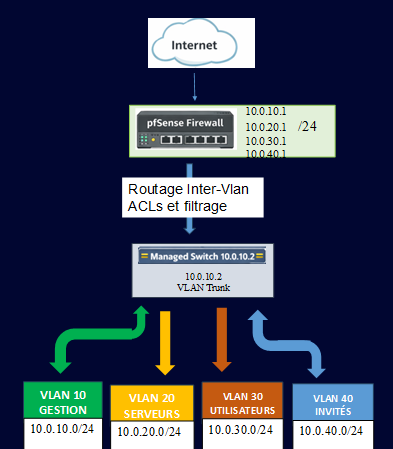

Réalisations N°01
Mise en œuvre d'une architecture réseau segmentée (VLANs) et sécurisée par un firewall pfSense avec routage inter-VLAN.
La segmentation réseau consiste à diviser un réseau informatique en plusieurs sous-réseaux isolés, appelés VLANs (Virtual Local Area Networks).
L'objectif principal est de limiter la "surface d'attaque" : si un équipement dans le VLAN Invités est compromis, l'attaquant ne peut pas accéder au VLAN Serveurs sans passer par le pare-feu.
Les intérêts de cette architecture sont :
- Sécurité accrue : Isolation native des flux critiques.
- Optimisation des performances : Réduction des domaines de diffusion (broadcast).
- Contrôle granulaire : Application de règles de filtrage (ACL) spécifiques à chaque métier.
- Conformité : Respect des bonnes pratiques de l'ANSSI en matière de cloisonnement.
Prenons un exemple pour bien comprendre...
Dans un réseau non segmenté, un visiteur en Wi-Fi pourrait techniquement accéder à la base de données des serveurs. Avec ma solution, le pare-feu pfSense bloque systématiquement cette tentative.

Le "Router-on-a-Stick" : L'intelligence au cœur du réseau
Pour gérer ces VLANs, j'ai utilisé la méthode du Router-on-a-Stick via le protocole IEEE 802.1Q.
Le protocole 802.1Q permet d'ajouter une "étiquette" (Tag) aux paquets de données. Cela permet de faire circuler plusieurs réseaux différents sur un seul et même câble physique (le Trunk).
L'utilisation du pare-feu pfSense comme routeur central permet de filtrer chaque paquet qui tente de passer d'un VLAN à un autre. C'est le "poste de contrôle" du réseau.
Parlons un peu de l'évolution...
Historiquement, on utilisait un câble physique par réseau, ce qui était coûteux et peu flexible. Aujourd'hui, grâce à la virtualisation sous Proxmox VE et au standard 802.1Q, nous pouvons créer des dizaines de réseaux sécurisés en quelques clics !
En 2026, la segmentation n'est plus une option mais une nécessité face à l'augmentation des cybermenaces. Mon projet intègre également une perspective de supervision avec Zabbix pour surveiller la santé de ces flux en temps réel.
Prenons un exemple pour bien comprendre...
Lorsqu'un utilisateur du VLAN 30 tente de contacter un serveur du VLAN 20, le pfSense analyse la règle de filtrage. Si la règle l'autorise, le paquet passe ; sinon, il est détruit et l'événement est enregistré dans les logs de sécurité.